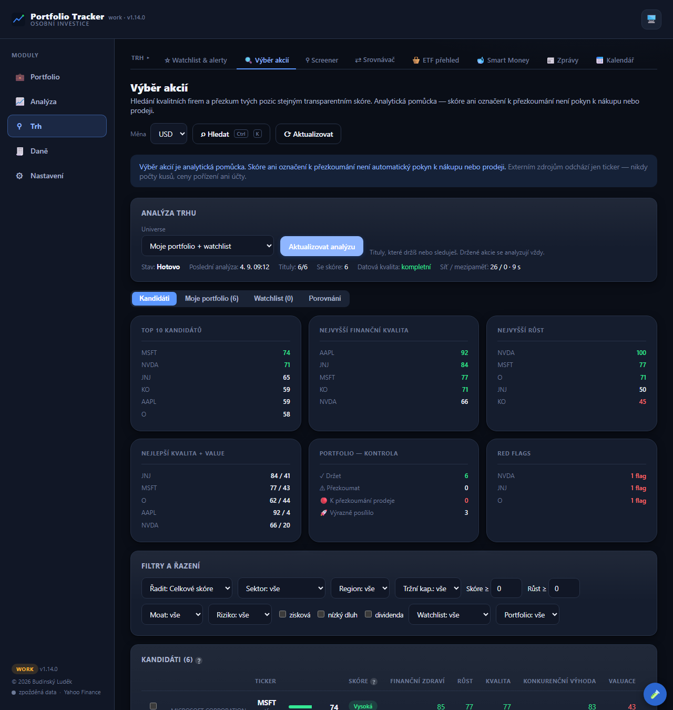

📊Portfolio Tracker
My own investment portfolio tracker that runs entirely in my browser. It records positions across brokers, computes profit/loss, dividends, taxes and stock fair value, finds quality companies and reviews the positions I hold — and shows how the portfolio actually performs over time. No account, no cloud, my holdings never leave the device. 38 pages across 5 modules, 4,897 automated tests.
React TypeScript Vite Recharts localStorage (no cloud) Python / pywebview (desktop) 4,897 tests
What it does
I have a bookkeeping app that records money and an analyst that advises on individual stocks. Portfolio Tracker is the third piece: it tracks how the whole investment portfolio performs over time — in one place, without logging in anywhere. Inspired by tools like Digrin, but built so my positions never get sent out.
Transactions are the source of truth. Instead of typing "I own 10 shares", the app keeps individual buys, sells and dividends — and derives positions, average price and realized gain from them (FIFO). That keeps taxes and history consistent.
It reads broker statements itself. I drop in CSV / XLSX / PDF from XTB, eToro, Trading 212 or Interactive Brokers; the app detects the broker, normalizes the format and de-duplicates repeated imports (a fingerprint per transaction). XTB accounts can be split by currency (USD/EUR/CZK separately).
Taxes by Czech rules. FIFO matching of sales, the 3-year time test (exemption for long holding) and the §4 value test (sale proceeds ≤ CZK 100,000/year). The summary is always computed in CZK even when the portfolio base is e.g. USD (converted at the historical rate on the trade date).
Performance and fair value. XIRR, CAGR, TWR, volatility, Sharpe, a value-over-time chart and monthly returns (year × month). Per ticker there are 6 valuation models (DCF, Graham, Lynch, DDM, EV/EBITDA, Multiples), a screener with my own composite score, a sector heatmap and an earnings calendar.
Public data, keys stay with me. Live prices from Yahoo Finance, fundamentals from SEC EDGAR and Finnhub, an optional AI analyst via Gemini. Any API keys stay locally in the browser — never in the code or sent out. The whole app runs locally; no server sees my positions.
It does not guess. This is the property I care about most when money is involved: a missing value is marked as missing, never filled in with an estimate. When a quote does not arrive, the app will not value the position at its purchase price and pass that off as market value — it says the price is missing. When a dividend statement does not state the withholding tax, it is not derived from a rate. A scoring axis with no data does not get a middling grade; it drops out, with the reason written next to it. A zero is a claim, not a filler.
It cross-checks against the broker. eToro does not expose trades through its API, so the app pulls at least the total account value and compares it with what it computed itself — if the numbers diverge, it says a newer statement is probably missing. A coverage indicator tracks how old the last imported statement is for each account. Every import has a preview that spells out in advance exactly what will be written, overwritten or lost.
My own analytical slices. The "analysis canvas" is a set of blocks over my transactions — value breakdown by sector, fees, dividends, valuation. It can be rearranged by question, such as Where is my money, really? or What am I paying in fees?, and every block states its data source, period and coverage, so it is clear where a number came from.
Finds quality companies and reviews what I hold. The "Stock picking" page runs through a curated list of companies, my portfolio or my watchlist and scores every company on six axes (financial health, growth, quality, moat, valuation, momentum) from SEC EDGAR annual statements and Yahoo prices. Every score comes with a confidence — how many axes were actually computed and how old the data is — and every axis with the evidence behind it. Held positions go through the same score; a "sell-review candidate" only arises from deteriorating fundamentals, red flags and valuation, never from a price move alone. The app trades nothing and changes nothing in the portfolio — the only thing it can write is a candidate added to the watchlist with a reason.
Key features
- Positions, P/L and allocation — portfolio value overview, unrealized and realized gain, breakdown by sector, type, position and currency, concentration warnings.
- Import from 4 brokers + live API — XTB, eToro, Trading 212, Interactive Brokers (CSV/XLSX/PDF); plus a live IBKR connection via Flex Web Service the Trading 212 API and the eToro Public API (read-only — balances), with optional automatic transaction pull at startup. Idempotent dedup, a broker → account → transaction model, XTB split by currency. The statement period is read from the file contents, not its name — day/month order must never be guessed.
- Czech taxes (FIFO) — 3-year time test and the CZK 100,000 value test, days remaining to exemption, tax-loss harvesting (deductible vs time-test-exempt split), trade export for the tax return. Indicative, not tax advice.
- Performance — XIRR, CAGR, TWR, volatility, max drawdown, Sharpe, a value-over-time chart benchmarked against the S&P 500 / NASDAQ and monthly returns (capital gain by month).
- Dividends — annual income and yield by position, actual income by month (TTM + year-over-year) and a dividend calendar projecting 12 months ahead.
- Market & news in-app — inline news (portfolio and whole market), Market Pulse (VIX, Fear & Greed, sectors, biggest movers) and a macro calendar of economic events — all from free public data, no paid API.
- Fair value & screener — 6 valuation models, a model switch, my own composite score, Beta and analyst consensus (Finnhub), P/E and Fwd P/E.
- Stock picking (since 1.14, extended in 1.15 and 1.16) — a 0–100 score on six axes with visible evidence, risk as a penalty, 12 explained red flags, catalysts only from filings, a bear/base/bull fair value with stated assumptions and a deterministic thesis. Held positions are reviewed by the same engine (hold / review / sell-review candidate), 2–5 companies can be compared side by side, and the detail has 11 sections including sources, data age and links to SEC filings. The universe is an honestly named curated list of 66 companies, not an index. Read-only towards the portfolio, no trade orders. Since 1.15 also: predecessor statements for a successor registrant, FFO/AFFO for REITs only from documented line items (price / FFO instead of P/E), peer percentiles within the run, a 5-fiscal-year P/E history and a CIK map that survives a restart. Since 1.16: a universe from a fund's holdings (a holdings CSV from iShares or Invesco that I download myself — the app scrapes nothing and never calls it an index) and an upfront estimate of how many tickers and megabytes a run will download.
- Heatmap, calendar, AI analyst — a sector heatmap of the portfolio, an earnings calendar and an AI analyst (Gemini) over the portfolio data — all clearly flagged as not investment advice.
- Dashboard and analysis canvas — a custom set of cards drawn from the other pages, plus a canvas of analytical blocks that can be switched by question ("Where is my money, really?", "What am I paying in fees?"). The layout is stored in the browser only and never touches portfolio data.
- Portfolio health and signals — a composite score across seven axes (diversification, valuation, risk, quality, income, sentiment, factors). An axis without data is not computed — it drops out with the reason stated, so the score never looks better than the evidence behind it.
- Cross-check against the broker — for eToro the app pulls the total account value over their API and compares it with its own figure; a gap above 5% warns that a newer statement is probably missing. A coverage indicator tracks the age of the last statement per account.
- Tax-return FX rate under § 38 of the Czech Income Tax Act — either the daily CNB rate or the unified rate published by the tax authority, selectable and documented; the app downloads rate years from the CNB itself and reports when the unified rate for a year has not been published yet.
- Backups, snapshots and restore — a full JSON backup (optionally including settings and keys, or stripped of secrets for archiving), restore by overwrite or merge, safety snapshots before every automatic data change, and a System Health page with diagnostics.
- Investment journal and goals — notes on decisions per ticker and investment goals with projection; for a goal the app computes the required monthly contribution, but only if I enter the expected return myself — defaulting to "the usual 8%" would turn an invented number into a plan.
- No account, no cloud, 4,897 tests — everything local (localStorage), data never leaves the device. Under the hood 4,897 automated tests and a calculation-assurance layer (self-checking valuations). Fixes are verified by mutation — temporarily reverting the fix must make a test fail, otherwise the test proves nothing.
Previews





The previews use a sample (demo) portfolio — real positions and personal financial data do not belong on the web.
Status
Beta version v1.16.0 (September 2026), 4,897 automated tests, 38 pages across 5 modules. A fully standalone local desktop app (React/Vite in its own window via pywebview) with silent auto-update from my home NAS and an installation that needs no admin rights — runs only on my PC. Private, with no public hosting and no public downloadable installer — real data and personal info never go on the web; the previews above use a sample portfolio. Not investment advice, just an analytical and record-keeping tool for me.
A few numbers on scope: 4 supported brokers, 3 live read-only APIs (Trading 212, IB Flex, eToro), 6 valuation models, 7 portfolio scoring axes, 6 company scoring axes in stock picking, CNB daily rates and the unified tax-authority rate for the Czech tax return.